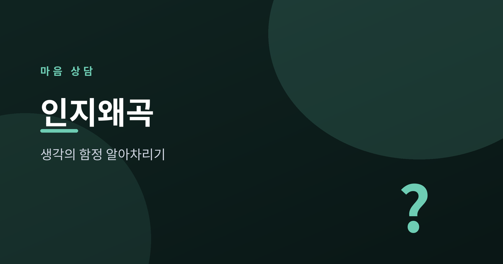
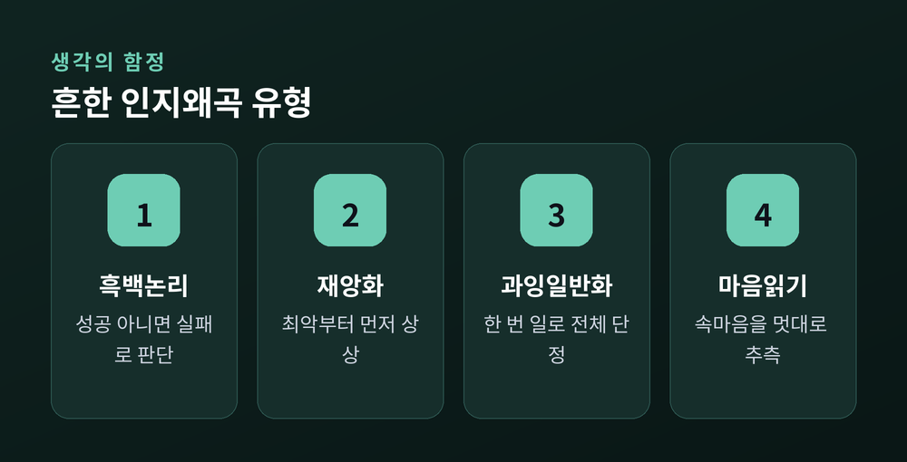
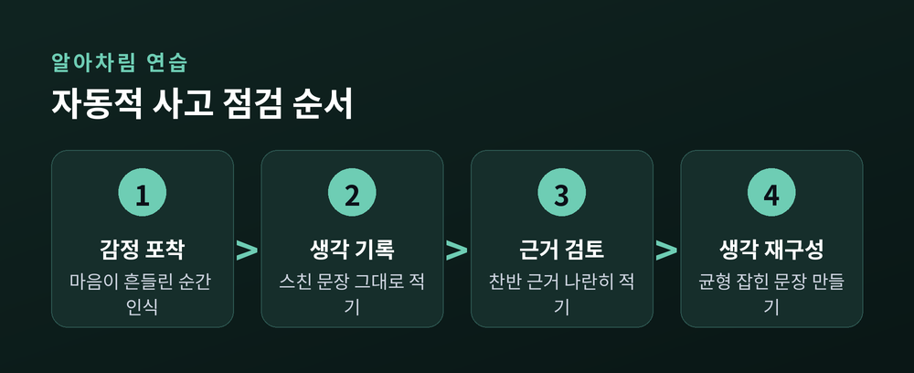
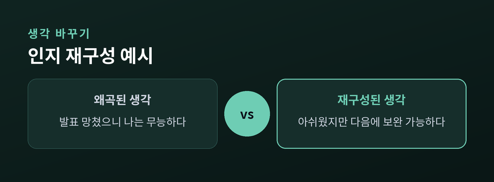

나를 괴롭히는 생각의 함정

살다 보면 유독 마음이 무거워지는 날이 있습니다. 어떤 날은 작은 실수 하나로 "나는 역시 부족한 사람이야"라는 결론에 이르고, 또 어떤 날은 친구의 짧은 답장 하나에 "혹시 나를 싫어하나"라는 생각이 꼬리를 뭅니다. 이런 생각들은 대부분 사실 확인을 거치지 않은 채 순식간에 스쳐 지나가는데, 이를 자동적 사고라고 부릅니다. 인지행동치료(CBT)에서는 이 자동적 사고 속에 특정한 왜곡된 패턴이 반복된다고 설명합니다.
인지왜곡은 현실을 있는 그대로 보지 못하게 만드는 생각의 습관입니다. 감정이 격해질수록 이런 패턴이 더 강하게 작동하며, 결과적으로 불안과 우울감을 키우는 악순환으로 이어질 수 있습니다.

대표적인 유형은 다음과 같습니다.
| 유형 | 특징 |
|---|---|
| 흑백논리 | 성공 아니면 실패로만 판단 |
| 재앙화 | 최악의 결과부터 상상 |
| 과잉일반화 | 한 번의 일을 전체로 확대 |
| 마음읽기 | 근거 없이 상대 속마음 단정 |
| 개인화 | 무관한 일도 내 탓으로 돌림 |
생각은 사실이 아니라 하나의 해석일 뿐입니다.

감정이 갑자기 흔들릴 때, 그 순간 머릿속을 스친 문장을 그대로 적어보는 것이 출발점입니다. 이후 그 생각을 뒷받침하는 근거와 반박하는 근거를 나란히 적어보면, 생각이 얼마나 단정적이었는지 스스로 확인할 수 있습니다.

인지 재구성은 왜곡된 생각을 억지로 긍정으로 바꾸는 것이 아닙니다. 더 균형 잡힌 시각으로 다시 써보는 연습입니다. 예를 들어 "발표를 망쳤으니 나는 무능하다" 대신 "오늘 발표에서 아쉬운 부분이 있었지만, 다음에 보완할 수 있다"처럼 표현을 조정해보는 것입니다.
이러한 연습은 일상에서 스스로 시도해볼 수 있는 좋은 도구이지만, 힘든 생각이 오래 지속되거나 일상생활에 지장을 준다면 전문 상담사나 정신건강 전문가와 함께 다루는 것을 권해드립니다. 혼자 애쓰기보다 전문적인 도움을 받는 것이 더 빠르고 안전한 회복의 길이 될 수 있습니다.